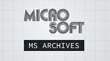The company's archives of our founders' best moments.
Jason Zander: Visual Studio 2010 Release Candidate Released - General Download Available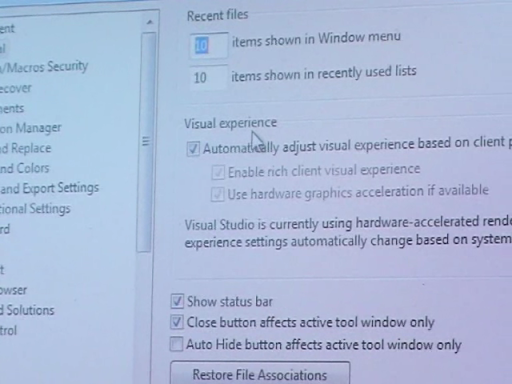[WMV] [0:23:07] [2010/02/09]The Visual Studio 2010 Release Candidate is here! Your Beta 2 feedback has been incredibly helpful to the engineering team. A big Thank You from Visual Studio!Here, Visual Studio General Manager Jason…
Bill Hill: On Channel 9, Niners and Homo Sapiens 2.0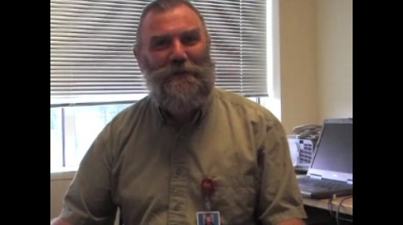[WMV] [0:22:38] [2009/04/07]Long time Niner, typography master, ClearType co-inventor and more-than-avid reader Bill Hill reflects on Channel 9, the state of the economy, Homo Sapiens 2.0 and the next version of, well, Bill Hill…
Bill Gates: Transitioning into the Future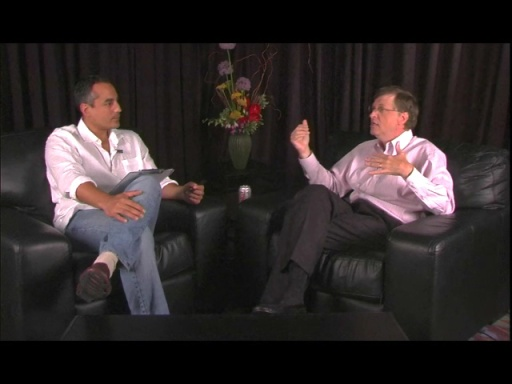[WMV] [0:27:38] [2008/06/23]Bill Gates has been at the helm of Microsoft for the entire existence of Microsoft. It's the only place he's worked and he's getting ready to step down from his day to day responsibilities in his…
Bill Gates @ CES 2008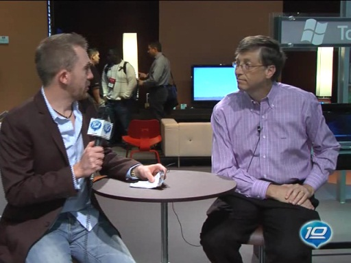[WMV] [0:06:54] [2008/01/07]The CES keynote stream is starting now, you can see it here. This is an important night for Bill Gates, after 15 years and 11 keynote addresses, this will be his last as he begins the transition from…
Bill Hill: Digital Democracy and the Declaration of Digital Independence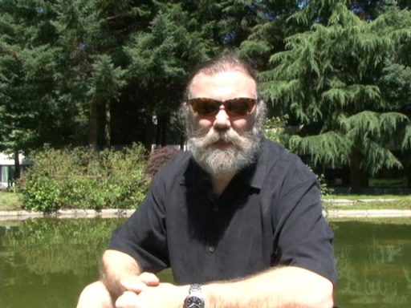[WMV] [0:56:01] [2007/08/18]Bill Hill is one of the Niners' favorite Microsoft personalities. He is also a legend around Microsoft and within the typography community. Bill spends most of his time thinking about how to make…
Jason Zander on the WinFX to .NET FX 3.0 rename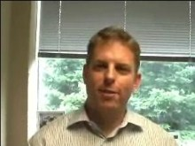[WMV] [0:03:57] [2006/07/19]Ok, just when we all had the WinFX name firmly stuck in our heads, they went and changed it! Why? What does this mean for you? What folders will you end up with in your Microsoft .NET directory? All t…
New Role for Bill in July 2008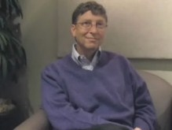[WMV] [0:03:57] [2006/06/16]Bill Gates and Steve Ballmer had an important announcement to make today and we were lucky enough to catch up with them for a brief chat about the big news this morning.Postscript: Check out the…
Seventeen Minutes With Bill[WMV] [0:03:57] [2006/02/16]On Monday, we had the honor of meeting with Bill Gates to discuss MIX06, IE, DHTML, AJAX, Compatibility, Office 12, and also gain insight into where he surfs on the web :)He also shares with us where …
Soma - Conversation with Visual Studio's vice president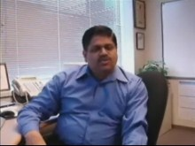[MP4] [0:19:57] [2005/11/08]S. Somasegar is the corporate Vice President of the Developer Division at Microsoft. Ken Levy took his camcorder over and had a nice chat with him to celebrate the launch of Visual Studio 2005. Soma…
Bill Hill - A Hike Around Microsoft's Forests (Happy Birthday Video #5)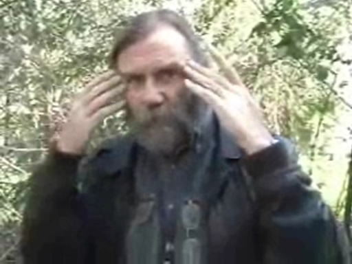[WMV] [1:28:22] [2005/04/06]Last year Bill Hill, director of advanced reading technologies, was our first interview. And one of our most popular to boot.One thing we remembered from last year was his explanation that Windows is…
Jason Zander - About the CLR team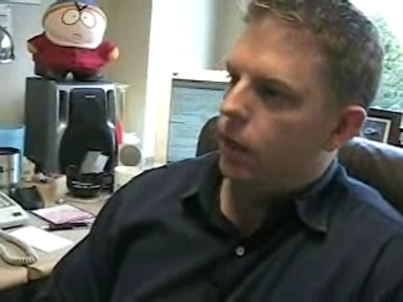[WMV] [0:10:37] [2004/11/23]Charles Torre, one of the developers who works on Channel 9's code, sat down with Jason Zander, Product Unit Manager of the .NET Common Language Runtime team. Here's the first part of that…
Jason Zander - Tour of the .NET CLR team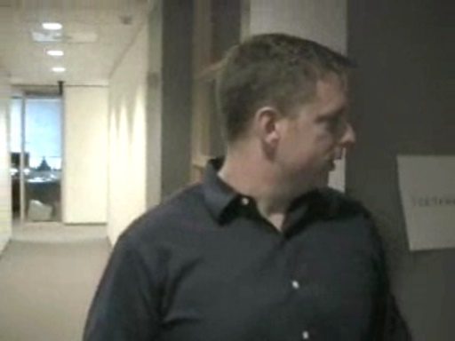[WMV] [0:06:35] [2004/11/18]Jason Zander invited Charles Torre and cameraman Robert Scoble to meet the .NET Common Language Runtime team.In this first of three segments (it's a big team!) you'll meet a variety of developers from…
Bill Hill - What were the influences in your life?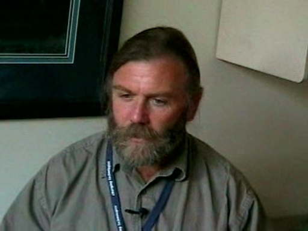[WMV] [0:03:20] [2004/04/20]Bill Hill, head of the typography department here, talks about the influences his parents played in his life. What influenced you to get involved in computers/technology?
Bill Hill: Homo sapiens 1.0 - The world's most important operating system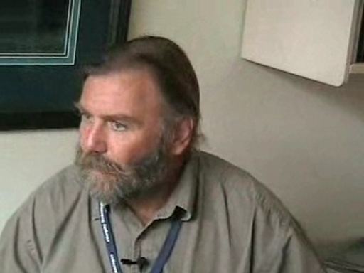[WMV] [0:03:30] [2004/03/27]The most important operating system developers write software for is not Windows or OSX or Linux or Android. It's Homo sapiens 1.0. We make software for people first. Very wise words from a very wise…
Bill Hill - There is only one space after a period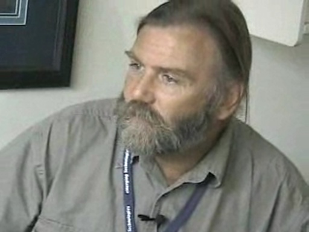[WMV] [0:02:27] [2004/03/27]Are you a one spacer or a two spacer? Bill Hill gives his opinion on why you only put one space after a period. This video was shot in 2004. We will miss you, Bill. Thank you for changing the world…